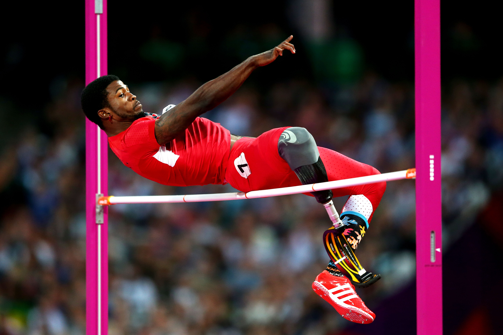

Paralympic Sports
At Mdantsane University, we believe in inclusiveness. People of disability can take part in athletic activities.
Athletics is a group of sporting events that involves competitive running, jumping, throwing, and walking. The most common types of athletics competitions are track and field, road running, cross country running, and racewalking.
Here at Mdantsane University, we offer a range of athletic activities our students can take part in. Students will get the opportunity to receive training and pursue a career in their respective sport. If you have any question, please free to contact our support department to help you with any information you may need, including the application process.
At Mdantsane University, we believe in inclusiveness. People of disability can take part in athletic activities.
Physical activities that contribute to physical fitness, mental well-being and social interaction.
A mind sport is a game of skill where the competition is based on a particular type of intellectual ability as opposed to physical exercise.
Animals in sport are a specific form of working animals. Many animals, at least in more commercial sports, are highly trained. Two of the most common animals in sport are horses and dogs.
Want to pursue a career in commerce? Find out how by selecting from our various courses available.
Coordination is the ability to use the senses together with body parts during movement. For example, dribbling a basketball.